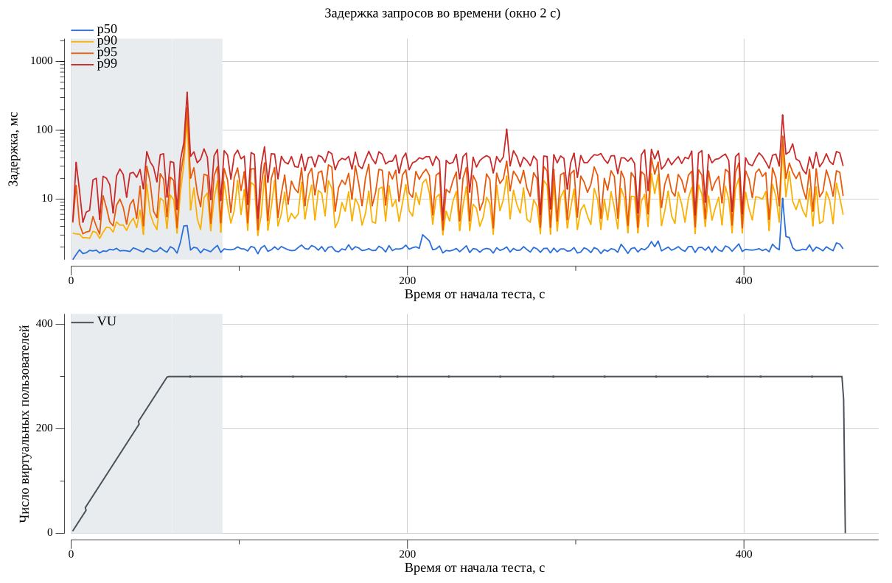
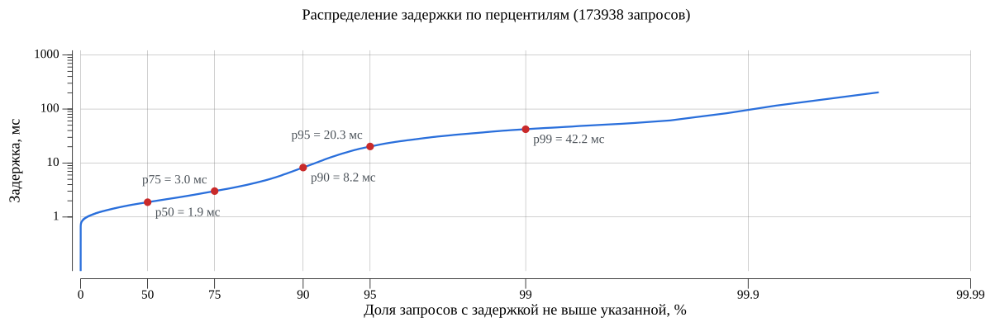
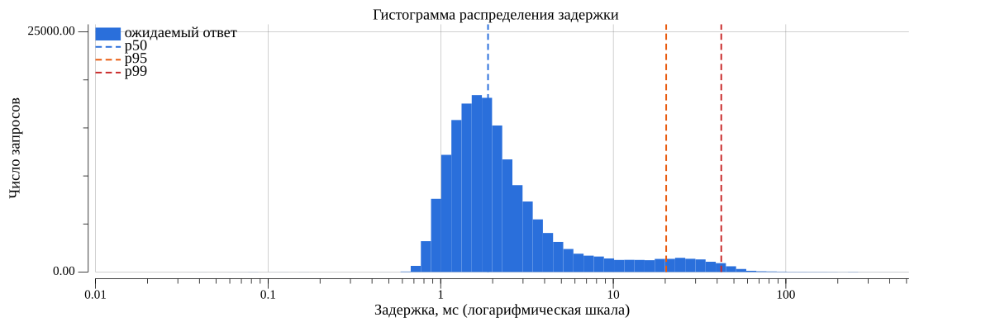
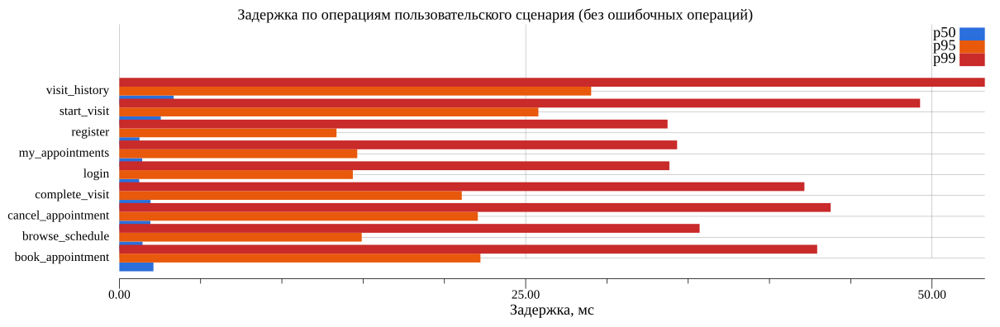
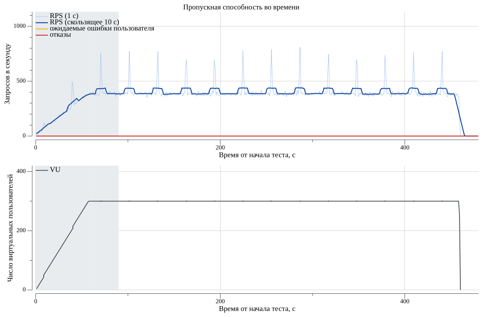
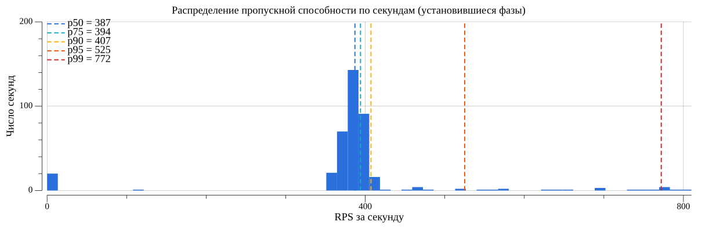
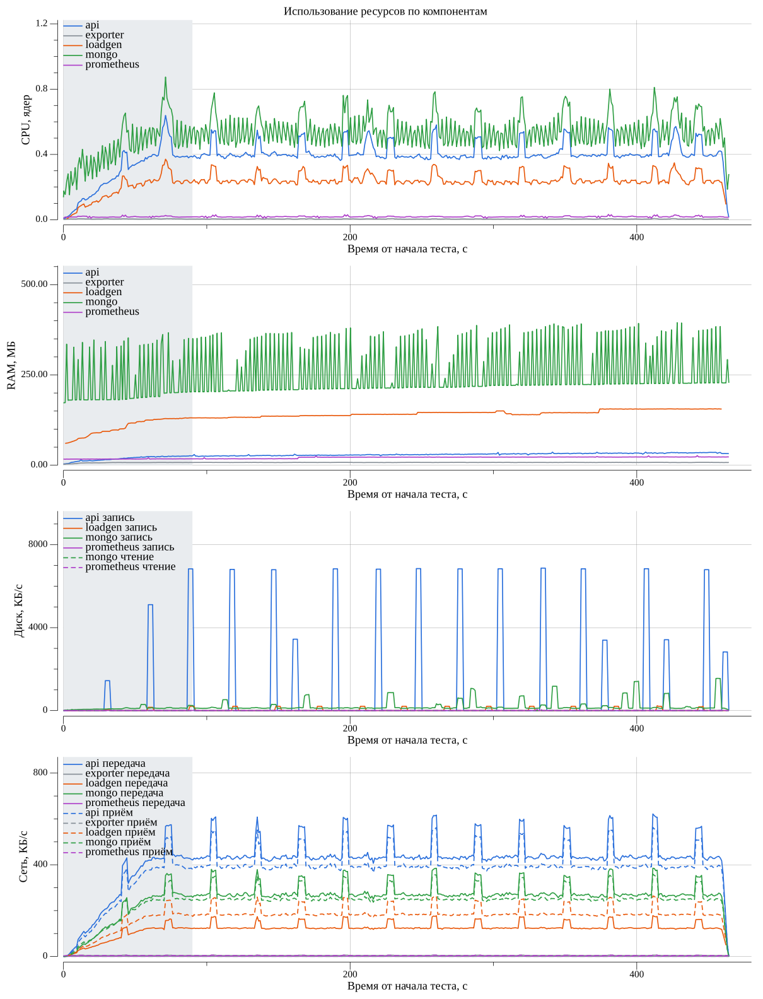

Фиксированная нагрузка
Запросов173938
RPS среднее / медиана362 / 384
p50 / p95 задержки1.88 / 20.3 мс
p99 задержки42.2 мс
Отказы0.00%
Ошибочные операции0.00%
Ошибочных операций: задано 0%, фактически 0.0%. Отказы 0.00%. Дрейф p95 между первым и последним отрезком ×1.24, RPS ×0.73. Тренд памяти: api 94.4 МБ/ч, exporter 0.33 МБ/ч, loadgen 252 МБ/ч, mongo 258 МБ/ч, prometheus 48.2 МБ/ч.
Задержка
| Задержка, мс | count | min | mean | p50 | p75 | p90 | p95 | p99 | max |
|---|---|---|---|---|---|---|---|---|---|
| Все запросы | 173938 | -1460 | 4.39 | 1.88 | 3.02 | 8.24 | 20.3 | 42.2 | 511 |
| Корректные операции | 173938 | -1460 | 4.39 | 1.88 | 3.02 | 8.24 | 20.3 | 42.2 | 511 |
| Ошибочные операции | 0 | — | — | — | — | — | — | — | — |



Операции пользовательского сценария
| Операция | count | min | mean | p50 | p75 | p90 | p95 | p99 | max | Отказы | Ошибочные |
|---|---|---|---|---|---|---|---|---|---|---|---|
| book_appointment | 25232 | 0.04 | 4.74 | 2.10 | 2.95 | 9.31 | 22.2 | 42.9 | 252 | 0.00% | 0.00% |
| browse_schedule | 25263 | 0.65 | 3.28 | 1.43 | 1.93 | 5.13 | 14.9 | 35.7 | 186 | 0.00% | 0.00% |
| cancel_appointment | 7554 | 0.07 | 4.72 | 1.91 | 2.76 | 9.38 | 22.1 | 43.8 | 257 | 0.00% | 0.00% |
| complete_visit | 17570 | -1460 | 4.44 | 1.92 | 2.75 | 9.07 | 21.1 | 42.2 | 246 | 0.00% | 0.00% |
| login | 25267 | 0.06 | 3.02 | 1.22 | 1.67 | 4.73 | 14.4 | 33.8 | 176 | 0.00% | 0.00% |
| my_appointments | 25193 | 0.04 | 3.19 | 1.41 | 1.90 | 4.99 | 14.6 | 34.3 | 128 | 0.00% | 0.00% |
| register | 5177 | 0.09 | 2.90 | 1.24 | 1.69 | 4.18 | 13.4 | 33.7 | 98.6 | 0.00% | 0.00% |
| start_visit | 17595 | -1439 | 5.75 | 2.55 | 3.64 | 12.2 | 25.8 | 49.3 | 305 | 0.00% | 0.00% |
| visit_history | 25087 | 0.04 | 6.99 | 3.34 | 5.06 | 14.8 | 29.0 | 53.3 | 511 | 0.00% | 0.00% |

Пропускная способность
| Показатель | count | min | mean | p50 | p75 | p90 | p95 | p99 | max |
|---|---|---|---|---|---|---|---|---|---|
| RPS за секунду | 480 | 0.00 | 362 | 384 | 393 | 406 | 477 | 771 | 809 |


Фазы нагрузки
| Участок | VU | RPS ср. | RPS p50 | RPS p5 | p50 мс | p95 мс | p99 мс | Отказы | CPU api | CPU mongo | RAM api, МБ | SLO |
|---|---|---|---|---|---|---|---|---|---|---|---|---|
| разгон | 300 | 216 | 213 | 29.6 | 1.80 | 10.1 | 31.5 | 0.00% | 0.22 | 0.39 | 15.3 | да |
| прогрев | 300 | 403 | 386 | 369 | 1.95 | 28.7 | 104 | 0.00% | 0.44 | 0.57 | 24.6 | да |
| стабильная нагрузка | 300 | 382 | 387 | 54.0 | 1.89 | 20.3 | 41.2 | 0.00% | 0.41 | 0.55 | 30.3 | да |
Динамика длительной нагрузки
| Участок | VU | RPS ср. | RPS p50 | RPS p5 | p50 мс | p95 мс | p99 мс | Отказы | CPU api | CPU mongo | RAM api, МБ | SLO |
|---|---|---|---|---|---|---|---|---|---|---|---|---|
| 1/5 | 300 | 407 | 389 | 366 | 1.88 | 19.8 | 40.4 | 0.00% | 0.41 | 0.55 | 26.3 | да |
| 2/5 | 300 | 400 | 386 | 367 | 1.90 | 18.8 | 38.8 | 0.00% | 0.42 | 0.55 | 28.4 | да |
| 3/5 | 300 | 407 | 388 | 368 | 1.81 | 19.7 | 40.7 | 0.00% | 0.41 | 0.54 | 30.6 | да |
| 4/5 | 300 | 399 | 386 | 365 | 1.90 | 19.8 | 41.1 | 0.00% | 0.41 | 0.55 | 32.8 | да |
| 5/5 | 300 | 296 | 377 | 0.00 | 1.97 | 24.5 | 45.6 | 0.00% | 0.41 | 0.56 | 34.1 | да |
| Компонент | Тренд памяти на установившемся участке, МБ/ч |
|---|---|
| api | 94.4 |
| exporter | 0.33 |
| loadgen | 252 |
| mongo | 258 |
| prometheus | 48.2 |
Использование ресурсов
| Компонент | Метрика | min | max | mean | median | p95 |
|---|---|---|---|---|---|---|
| api | CPU, ядер | 0.01 | 0.64 | 0.39 | 0.39 | 0.54 |
| api | Троттлинг CPU, с/с | 0.00 | 0.01 | 0.00 | 0.00 | 0.00 |
| api | Чтение с диска, КБ/с | 0.00 | 0.00 | 0.00 | 0.00 | 0.00 |
| api | Запись на диск, КБ/с | 0.00 | 6873 | 874 | 0.00 | 6837 |
| api | RAM (working set), МБ | 3.66 | 36.4 | 28.0 | 29.1 | 34.7 |
| api | Сеть, приём КБ/с | 0.05 | 563 | 379 | 390 | 533 |
| api | Сеть, передача КБ/с | 0.10 | 622 | 419 | 431 | 591 |
| api | Процессы и потоки | 7.00 | 16.0 | 8.94 | 9.00 | 9.00 |
| exporter | CPU, ядер | 0.00 | 0.01 | 0.00 | 0.00 | 0.01 |
| exporter | Троттлинг CPU, с/с | 0.00 | 0.00 | 0.00 | 0.00 | 0.00 |
| exporter | Чтение с диска, КБ/с | 0.00 | 0.00 | 0.00 | 0.00 | 0.00 |
| exporter | Запись на диск, КБ/с | 0.00 | 0.00 | 0.00 | 0.00 | 0.00 |
| exporter | RAM (working set), МБ | 2.73 | 7.93 | 7.53 | 7.68 | 7.91 |
| exporter | Сеть, приём КБ/с | 0.36 | 0.68 | 0.50 | 0.48 | 0.67 |
| exporter | Сеть, передача КБ/с | 1.95 | 5.72 | 4.22 | 4.04 | 5.62 |
| exporter | Процессы и потоки | 4.00 | 6.00 | 5.66 | 6.00 | 6.00 |
| loadgen | CPU, ядер | 0.01 | 0.37 | 0.23 | 0.24 | 0.33 |
| loadgen | Троттлинг CPU, с/с | 0.00 | 0.00 | 0.00 | 0.00 | 0.00 |
| loadgen | Чтение с диска, КБ/с | 0.00 | 0.00 | 0.00 | 0.00 | 0.00 |
| loadgen | Запись на диск, КБ/с | 0.00 | 233 | 24.9 | 0.00 | 207 |
| loadgen | RAM (working set), МБ | 60.5 | 156 | 136 | 141 | 156 |
| loadgen | Сеть, приём КБ/с | 1.91 | 264 | 178 | 182 | 250 |
| loadgen | Сеть, передача КБ/с | 1.51 | 178 | 121 | 123 | 170 |
| loadgen | Процессы и потоки | 7.00 | 8.00 | 7.99 | 8.00 | 8.00 |
| mongo | CPU, ядер | 0.15 | 0.87 | 0.53 | 0.53 | 0.72 |
| mongo | Троттлинг CPU, с/с | 0.01 | 0.40 | 0.14 | 0.14 | 0.23 |
| mongo | Чтение с диска, КБ/с | 0.00 | 45.0 | 0.55 | 0.00 | 0.00 |
| mongo | Запись на диск, КБ/с | 1.31 | 1553 | 204 | 120 | 847 |
| mongo | RAM (working set), МБ | 173 | 395 | 253 | 222 | 378 |
| mongo | Сеть, приём КБ/с | 0.11 | 359 | 242 | 249 | 342 |
| mongo | Сеть, передача КБ/с | 0.03 | 385 | 259 | 267 | 364 |
| mongo | Процессы и потоки | 39.0 | 98.0 | 80.2 | 82.0 | 95.0 |
| prometheus | CPU, ядер | 0.01 | 0.03 | 0.02 | 0.02 | 0.02 |
| prometheus | Троттлинг CPU, с/с | 0.00 | 0.00 | 0.00 | 0.00 | 0.00 |
| prometheus | Чтение с диска, КБ/с | 0.00 | 50.0 | 0.43 | 0.00 | 0.00 |
| prometheus | Запись на диск, КБ/с | 0.00 | 7.00 | 0.62 | 0.00 | 5.00 |
| prometheus | RAM (working set), МБ | 16.6 | 26.5 | 20.8 | 22.4 | 22.9 |
| prometheus | Сеть, приём КБ/с | 2.38 | 5.72 | 4.22 | 4.04 | 5.62 |
| prometheus | Сеть, передача КБ/с | 0.44 | 0.71 | 0.51 | 0.48 | 0.67 |
| prometheus | Процессы и потоки | 8.00 | 15.0 | 8.07 | 8.00 | 8.00 |

Коды ответов
| Код | Запросов |
|---|---|
| 200 | 125934 |
| 201 | 48004 |
Окружение прогона
| Компонент | Логические CPU | Квота CPU | Резерв RAM, МБ | Лимит RAM, МБ | Образ | ID образа |
|---|---|---|---|---|---|---|
| api | 0,1 | 1 | 512 | 512 | vitaline-lab6-api:20261124-234027-stable-rtbw | 34bab9a88d5d |
| exporter | 6,7 | — | 64 | 64 | vitaline-lab4-exporter:1 | 5d8e679d55a3 |
| loadgen | 4,5 | — | 2048 | 2048 | grafana/k6:1.3.0 | 3ddc8b1a33a2 |
| mongo | 2,3 | 1 | 1024 | 1024 | mongo:7 | 41e8195b2791 |
| prometheus | 6,7 | — | 768 | 768 | prom/prometheus:v3.5.0 | 63805ebb8d2b |